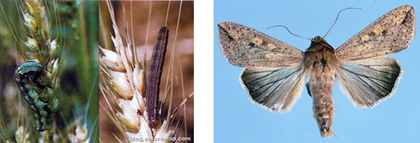

| Home |
| WHEAT |
| 1. Wheat Aphid |
| 2. Climbing cutworm / armyworm |
| 3. Ghujhia Weevil |
| 4. gram pod borer |
| 5. termites |
| 6. molya nematode / cyst nematode |
| 7. wheat-gall nematode |
| 8. Aphid |
| 9. hopper |
| 10. jassids |
| 11. wheat bug |
| 12. wheat thrips |
| 13. cut worms |
| 14. pink borer |
| 15. shootfly |
| 16. whorl maggot |
| 17. flea beetle |
| questions |
| Download Notes |
PESTS OF WHEAT :: Major Pests :: Armyworm
2. Armyworm: Mythimna separata (Noctuidae: Lepidoptera)
Distribution and status: Cosmopolitan. Sporadic and has gained prominence as a pest of wheat only recently, particularly after the introduction of Mexican varieties in India
Host range: Wheat, sugarcane maize, jowar, bajra, baru grass (Sorghum halepense) and other graminaceous crops.
Damage symptoms: The freshly emerged larvae spin threads from which they suspend themselves in the air and then with the help of air currents reach from one plant to another. In the early stages, they feed on tender leaves in the central whorl and later feed on older leaves and skeletonize them totally. The grown-up caterpillars throw out faecal pellets, which are quite prominent.
In the case of a severe attack, whole leaves, including the mid-rib, are consumed and the field looks as if grazed by cattle. The larvae feed voraciously and migrate from one field to another. The pest may also eat away ears, including the awns and immature grains.
Bionomics: Pale brown adults live for 1·9 days and lay eggs singly in rows or in clusters on dry or fresh plants or on the soil. Freshly laid eggs are round, light green, turn pale yellow and finally black. Egg period 4-11 days in summer 19 days in winter. Freshly emerged larvae are very active, dull white and later turn green. In spring, the larval stage is completed in 13-14 days, but in the winter it is prolonged to 88-100 days.
In the pre-pupal stage, the insect spins a cocoon. The pre-pupal stage lasts 1-11 days during January to May. Pupation usually takes place in the soil at a depth of 0.5-5 cm, but it may also occur under dry leaves among the stubble or fresh tillers. Generally, the larvae before pupation seem to select sites near the water-channels. The pupal period is 9-13 days in May and 36-48 days in winter.
 |
Management: The pest can be suppressed by collecting and destroying the caterpillars. (ii)Spray 500 ml of dichlorvos 85 SL or 3 kg of carbaryl 50 WP or 1.0 L of quinalphos 25 EC in 500 L of water per ha.